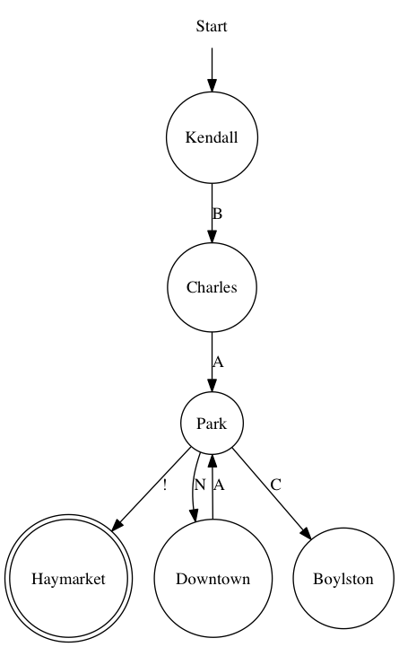

They did the MONSTER match!
Monday, February 29, 2016 · 6 min read
I needed a fun little project to tinker with while exploring tosh, and I settled on implementing regexes in Scratch. Because that’s clearly a very practical idea with no problems at all.
Regular expressions are like magic. If you haven’t come across them yet, you soon will. They’re a way to match text against patterns, and you can use a regex to teach a computer what, for example, an email address “looks like”. I’m going to assume that if you’re reading this, you have some idea of how to use regexes; but if you don’t, perhaps the aforementioned link could help you get up to speed.
Since regexes are like magic, they’re also one of those things that many people know how to use, but fewer people know how to implement, and even fewer people know how to implement efficiently. Hopefully by the end of this article, we’ll be part of that last group.
But first, something fun for you to play with: check out this Scratch project for a live demo.
Let’s talk about finite-state machines. Finite-state machines are kind of like a subway system. Suppose you’re heading back home after visiting the Scratch Team at MIT, and so you’re at Kendall Station on the MTA. Maybe you want to get to Haymarket.
(I promise this gets relevant to regexes soon.)
You could head north towards Alewife or south towards Braintree. Let’s head south. You pass Charles/MGH and then you’re at Park St. Now you have a choice: you can either continue on the red line towards Harvard, or you can switch over to the Green Line and go to west to Boylston or east to Haymarket (which is your destination).
Now imagine each little stretch of subway between two stations has a letter associated with it. So, maybe Kendall to Charles is “B” and Charles to Park St. is “A”, and so on. But, to be clear, the letters belong to the tracks joining two stations, not to the stations themselves. You go take a ride on the subway and read off the letter at each stretch.
You have now re-enacted what we call a “finite-state machine”. Instead of subway stations, we have states, and instead of stretches of tracks, we have edges.
Some details: the edges need to be directed, so you can’t go both ways on an edge. This makes sense with the subway analogy—each individual track only heads in one direction (otherwise the trains would collide!). To keep track of this, we draw them with arrows rather than lines.
Here’s a simpler picture of a small part of the T that we care about, then:

A few things to notice here: “letters” don’t need to be from the alphabet (“!” is a valid “letter”). You can use the same letter on multiple edges. And, finally, placement doesn’t matter. Haymarket isn’t actually west of Downtown.
Haymarket is double-circled because it’s the final destination.
Now, the question is, if you get from Kendall (start) to Haymarket (finish), what words can you form by reading off the letters in order? Well, you need to read off “B” and “A” to get to Park. But then you have a choice: you could go directly to Haymarket and read off a “!”, or you could go to Downtown and back and read off “N” followed by “A”. You can’t go to Boylston because there’s no way to get back to Haymarket from there.
And so some sequences you could read off are “BA!”, “BANA!”, “BANANA!”, and…
you might have already guessed that this matches the regex BA(NA)*!.
Interesting.
So it turns out that you can turn any finite state machine into a regular expression, and, more importantly, vice-versa. If you think of finite state machines in terms of the set of words they admit and regular expressions in terms of the set of words they match, then each FSM can be paired with an equivalent regex (but that regex isn’t necessarily unique!).
So to match a string against a regex, you really just need to match it against an equivalent FSM, which seems like a much easier thing to do since they’re so much more visual.
The way to match an FSM is to start with a coin on the start state (Kendall). Then, you read off the letters from the string you’re trying to match. For each letter, you look at all the coins on the FSM. For each coin, you either move it to an adjacent state if they’re connected by an edge with that letter, or you remove it from the FSM if there is no such edge (if there are multiple edges with the same letter, then you have to “clone” the coin and put a copy on each edge’s target—this is called a nondeterministic FSM, and more on this later).
If, when you’re done reading the string, a coin ends up in your final (“accepting”, double-circled) state then you win. That coin represents a way to travel the subway so that you read off that exact string, so your string must clearly be accepted by the FSM (and therefore the regex it’s equivalent to).
I suggest trying this process yourself with the “BANANA!” example.
And so this leaves one more question: how do you turn a regex into an FSM? This
turns out to be pretty easy.
Thompson gives an
algorithm to do this, but it’s really simple and I urge you to try and figure
it out yourself. The best way is to take each of the regex primitives like *
and | and () and figure out how you can compile each one down individually.
It’s a fun exercise, though there are some annoying subtleties with the empty
string that you might have to deal with.
You should also think about how you can turn other regex features like + and
charsets into simpler regexes that just involve the above-mentioned 3 things.
Can you compile down backreferences? Lookaheads?
Anyway, there’s also a way to turn the resulting nondeterministic FSM into a deterministic one (i.e. no coin-cloning) using what’s called the powerset construction. This creates a whole lot of new states, though, so it’s usually better to just make peace with coin-cloning. And there’s a host of algorithms to make deterministic FSMs smaller.
And that’s basically how my Scratch project works! There’s a small JavaScript program that takes a regex and outputs an FSM as a data structure. A second program then “flattens” the FSM into something that looks kind of like assembly (you could call this the “link” phase of the compilation). The assembly-ish stuff is just a flat, linear representation of the FSM in a Scratch list, where instead of arrows, I have the address of the state the arrow points to. Then a simple Scratch program written with Tosh goes and interprets that assembly using the coin-shunting technique. The whole process is very much like compiling a C program and running it on a processor, in fact.
Now that we know a fair bit about how to implement regexes, I want to talk
about a cool application of FSM theory: in particular, a nice little result
that says that you cannot write a regular expression to match nested
parentheses (so [], [[]], [[[]]] all match but ][[] doesn’t).
First, go ahead and try to write such a regex to convince yourself that you
can’t. No “cheating” using fancy stuff like backreferences and whatnot: I’m
talking about “pure” regexes involving only * and | and ().
Convinced? Good.
We’re going to prove that you can’t do this.
Recall that any regex can be turned into an FSM. So let’s suppose we had a
regex for matched parentheses, and we turned it into an FSM. Now, remember how
FSM stands for “finite-state machine”? That means it, uh, has a finite number
of states. Which means, if it has 100 states and you give that FSM the sequence
of 51 (s and 51 )s (for a total of 102 characters), then you must visit
some state twice. It’s the same argument as if you have 102 pigeons and 100
holes, you must have a hole with more than one pigeon in it.
And so if you loop back to a state, you can clearly loop back to that state again! So there must be some subsequence in your string that can be repeated while still matching the FSM. For example, in “BANANA!”, you can repeat the “NA” as many times as you want. This fact is called the pumping lemma (not to be confused with the pumping llama, which is a fuzzy weightlifting camelid).
Image by Kimberly Do.
Now, let’s think about the () language (called the Dyck
language). What part of it can
you repeat? If you repeat the (s then you have too many (s. If you repeat
the )s you have too many )s. And if you repeat something with both (s and
)s, you clearly don’t follow the (...(())...) structure anymore.
So… no such regex can exist.
Isn’t that a great argument? I think it’s very cool.
So, let’s recap. Regular expressions correspond to finite-state machines, which
are souped-up subway systems. You can implement finite-state machines as a kind
of automatic board game which also somehow involves cloning currency. Finally,
the finite-ness of finite-state machines lets us prove a llama lemma
which lets you show all sorts of interesting facts about regexes.
Perhaps a deeper lesson here is that regexes, and to a lesser extent the rest of computer science, might seem like magic. But it’s magic that you’re entirely capable of learning. In the words of my hero Basil Smockwhitener,
You don’t understand how powerful you are. You can learn anything. Anything at all. But you have to be willing to balance the scale with effort.